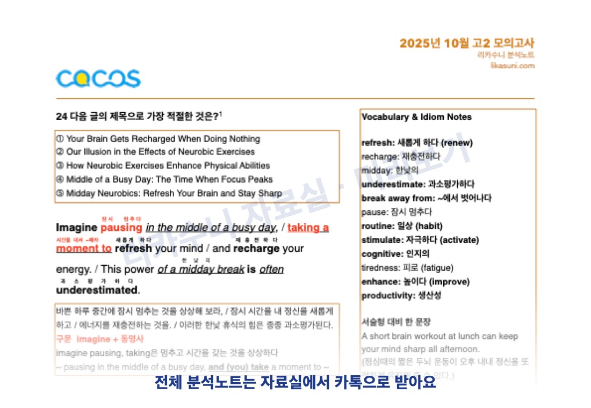

안녕하세요, 이매동 코코스학원 리카수니 원장입니다.
학생 요청으로 2025년 10월 고2 영어 모의고사 24번 분석노트를 만들었어요.
시험지를 옆에 펴 놓고 보시면 더 잘 보여요.
· 시험: 2025년 10월 고2 전국연합학력평가 영어
· 번호: 24번 (글의 제목)
· 정답: ⑤ Midday Neurobics: Refresh Your Brain and Stay Sharp
(한낮의 뉴로빅: 뇌를 새롭게 하고 예리함을 유지하라)
바쁜 하루 한가운데 잠깐 쉬는 시간의 힘은 자주 과소평가돼요.
특히 뇌를 자극하도록 만든 '뉴로빅 운동'을 점심때 해 보면, 인지적 피로를 막고 오후 내내 정신을 또렷하게 지킬 수 있다는 글이에요.
예를 들어 글쓰기·식사 같은 일상적인 일을 주로 쓰지 않는 손으로 해 보는 거예요.
근거 1: 한낮의 뉴로빅 운동이 뇌를 깨우고 남은 하루의 생산성을 높인다고 해요.
근거 2: 제목의 Refresh, Stay Sharp 가 본문의 refreshes, sharp and focused 와 그대로 이어져요.
→ '한낮(Midday) + 뉴로빅 + 뇌 새롭게 + 예리함 유지'를 모두 담은 ⑤가 정답이에요.
① 아무것도 안 할 때 뇌가 재충전된다 → 글은 '아무것도 안 하기'가 아니라 뉴로빅 운동을 하라는 내용이에요.
② 뉴로빅 운동 효과에 대한 착각 → 효과가 '착각'이라는 말은 없어요. 오히려 효과가 크다고 해요.
③ 뉴로빅 운동이 신체 능력을 높이는 법 → 몸이 아니라 뇌·인지 능력 이야기예요.
④ 집중력이 최고조에 이르는 시간 → '한낮'이라는 말만 겹치고, 뉴로빅 운동이라는 핵심이 빠졌어요.

1) imagine + 동명사
→ Imagine pausing ~, taking a moment to ~ (잠시 멈추고 시간을 내는 것을 상상해 보라)
2) 과거분사 후치 수식
→ activities designed to stimulate your brain (뇌를 자극하도록 설계된 활동)
3) keep + 목적어 + 형용사 / 분사구문 ensuring ~
→ keeping it agile and alert (뇌를 기민하고 민첩하게 유지하면서)
4) 동명사 주어 + 결과의 분사구문 병렬
→ Even briefly experimenting ~ 이 주어, 동사는 can work / activating ~ and promoting ~
· refresh 새롭게 하다
· recharge 재충전하다
· midday 한낮의
· underestimate 과소평가하다
· break away from ~에서 벗어나다
· stimulate 자극하다
· cognitive 인지의
· enhance 높이다
· productivity 생산성
· agile 기민한 / alert 민첩한, 깨어 있는
· boost 높이다
· ensure 보장하다
· work wonders 놀라운 효과를 내다
· non-dominant 주로 쓰지 않는
· promote 촉진하다
· flexibility 유연성
· take a moment to V 잠시 시간을 내어 ~하다
분석노트 PDF 에 '서술형 대비 한 문장'과 영어 핵심 요약(Core Summary)을 해석과 함께 정리해 두었어요.
끊어 읽기·해석·구문이 모두 정리된 PDF 는 리카수니 자료실에서 카카오 로그인 후 카톡으로 받을 수 있어요.
같은 회차 다른 번호도 요청할 수 있어요.
▶ 2025년 10월 고2 영어 자료 보기
https://data.likasuni.com/moe/go2/2025-10/eng/
분당 이매동 코코스학원은 초등·중등·고등 영어와 수학을 가르쳐요.
모의고사·수능특강·내신 대비가 궁금하시면 편하게 문의해 주세요.
· 홈페이지: https://www.cocosedu.co.kr/
· 주소: 경기 성남시 분당구 판교로 476 2층